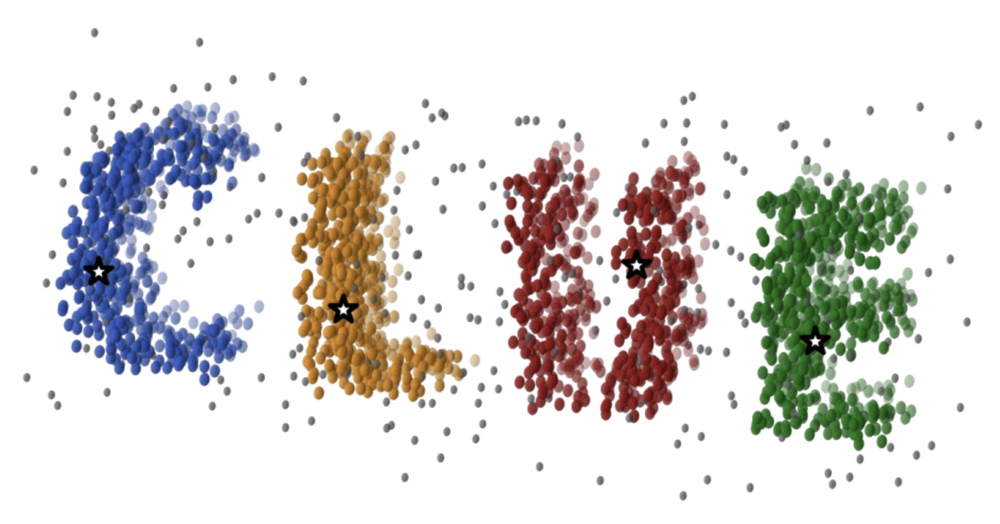
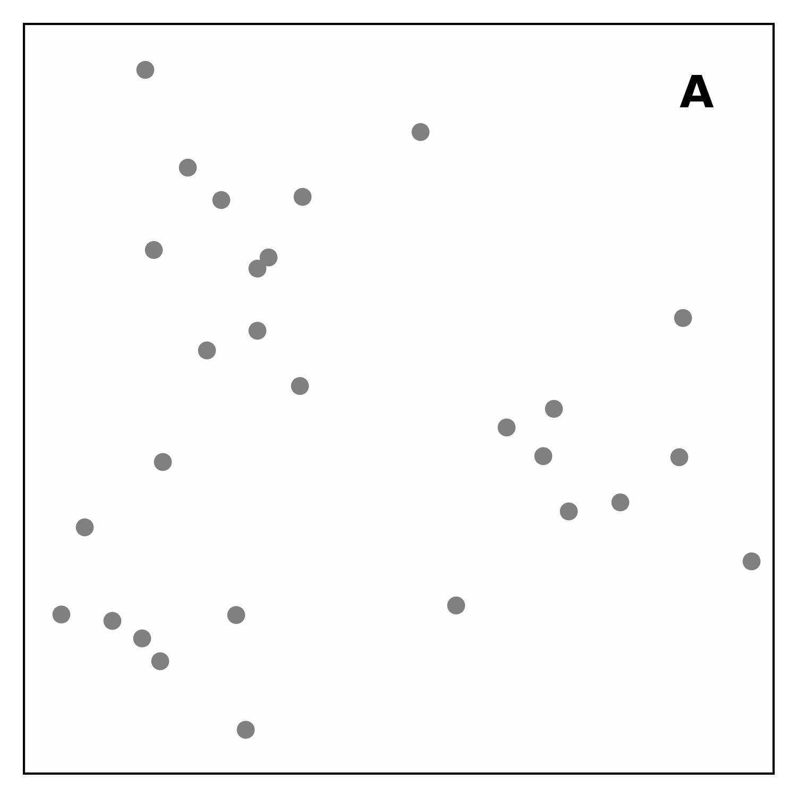

- Generated by
 1.13.2
1.13.2
|
CLUEstering
High-performance density-based weighted clustering library developed at CERN
|

CLUEstering is a C++ library designed for high-performance, multi-dimensional clustering. It is based on the CLUE algorithm, a highly parallel, density-based weighted clustering algorithm developed at CERN inside the CMS experiment.
Unlike many popular clustering algorithms, CLUEstering combines the flexibility of density-based clustering, which makes it robust to noisy data, with the generality of weighted clustering, allowing it to handle datasets where points have different relative importance.
Whereas for most common density-based algorithms weights can only be assigned by modifying the distance matrix or the dataset, CLUEstering uses the values directly in the computation of each point's density, providing better performance and a more natural use of weights.
The CLUE algorithm is designed to be highly parallel and efficiently executed on modern hardware accelerators such as GPUs and FPGAs. CLUEstering's backend uses alpaka, a C++ performance portability library, to make the backend portable and automatically executable on many types of accelerators without code duplication. Its scalability makes it suitable for large datasets, especially when executed on parallel hardware.
The algorithm proceeds in four main steps (illustrated below):
dc.dm.rhoc become seeds (cluster centers), while others are marked as outliers.The CLUE algorithm takes three main parameters: dc, rhoc, and dm.
